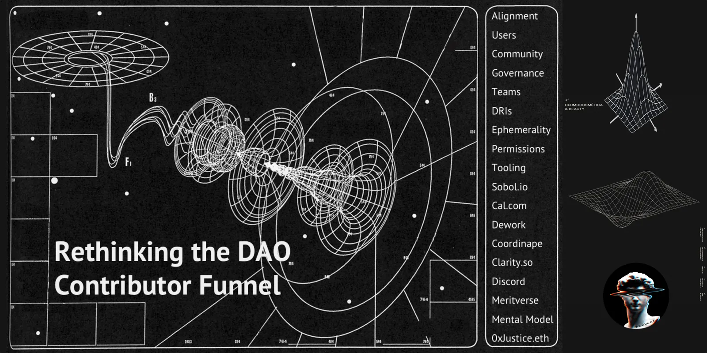
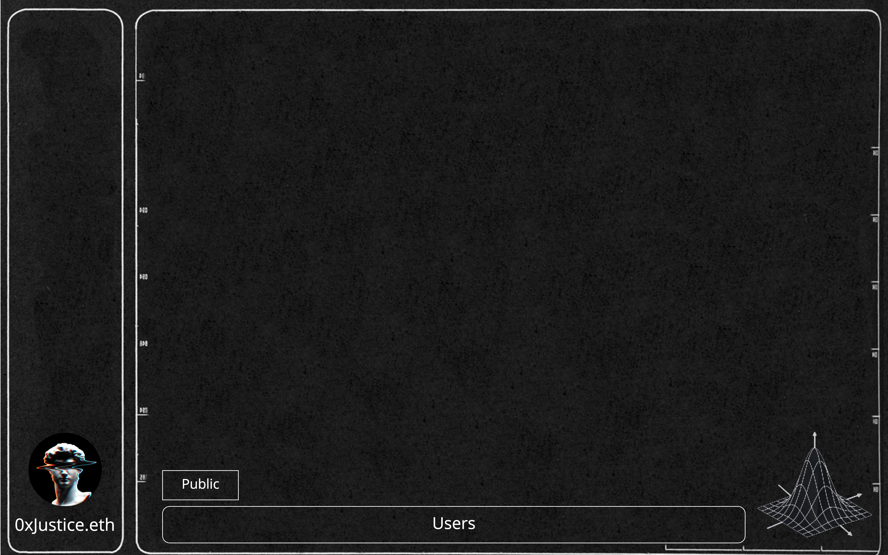
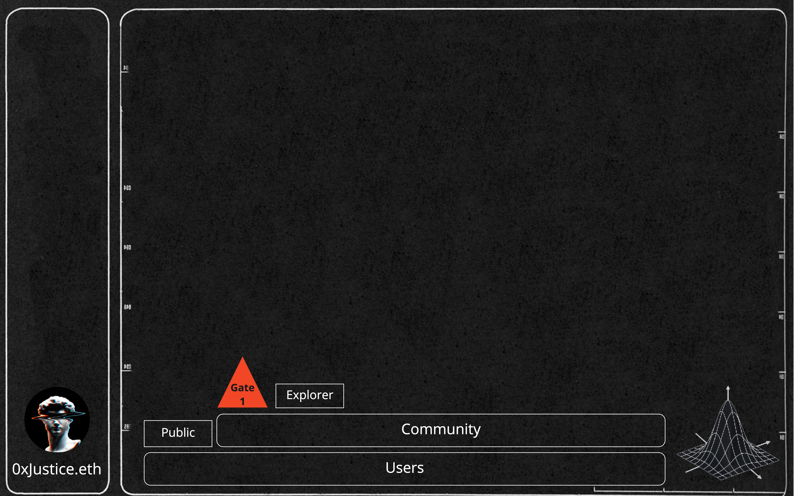
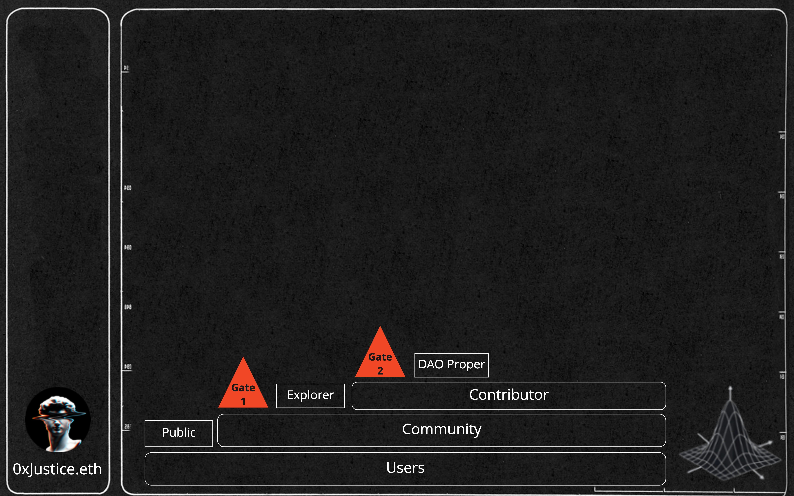
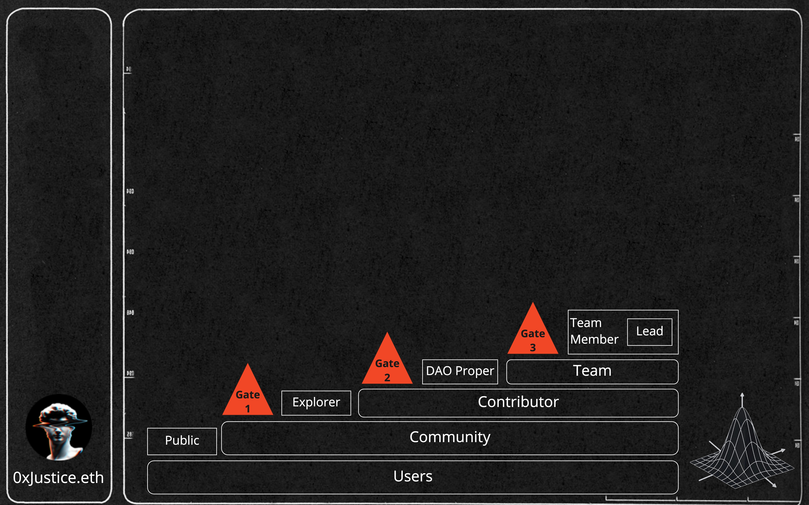
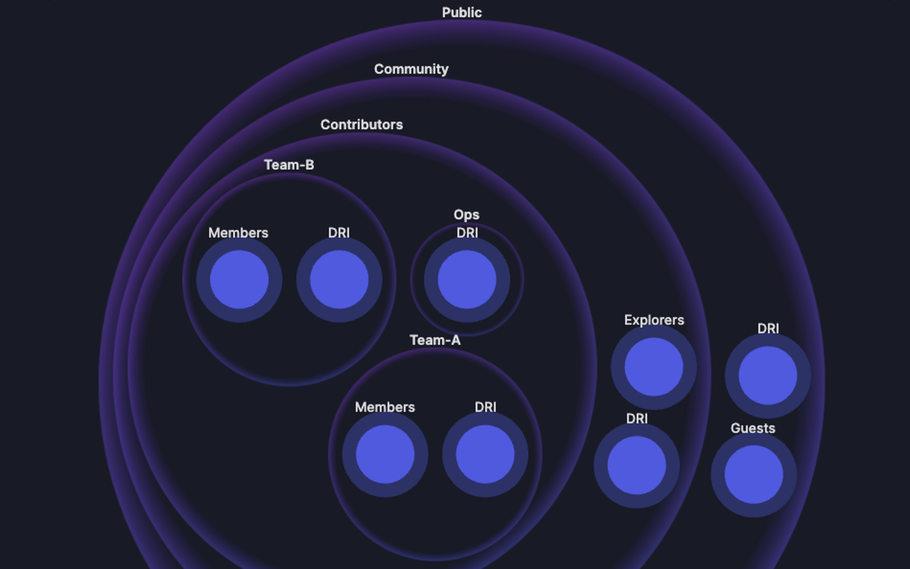
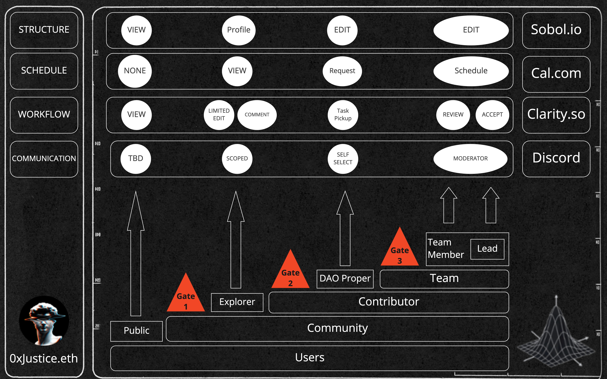

Rethinking the DAO Contributor Funnel
Originally published at https://paragraph.com/@0xjustice/rethinking-the-dao-contributor-funnel

Not everyone who joins your Discord server is a member of your DAO, and neither should they be. Different levels of community engagement have different privileges and expectations, and to conflate them is a disservice to your community. Some people want to participate casually, while others are seeking full-time employment. Some join for leisure, while others aim to untie the Gordian knot of decentralized governance.
Other issues arise from misaligned financial incentives. Members with a $500 investment are inclined to think differently than members with a $5,000 or $15,000 investment. Responsibilities differ as well. Asking someone to take notes in a meeting differs from managing a $25k project. In the latter scenario, the community assumes risks in opportunity costs, even if the funds are safe in a multisig. Consider the following questions when thinking about the organization of a DAO:
-
Does it segment groups with defined availability, responsibility, and expectation levels?
-
Does it leverage tools and access rights that correspond to those segmentation levels?
-
Does the financial upside of each segment match the expected levels of commitment and responsibility?
If the answer to any of these questions is no, a community will inevitably suffer from frustrations, confusion, resentment, and talent bleed. The experience and goals of everyone, including the DAO itself, are undermined with everyone lumped in the same undifferentiated basket.
This paper will propose a hierarchical scheme of membership levels and gates to address these segmentation issues and detail a contributor funnel in the process. Each segment, or layer, correlates to a specific concern and purpose of the DAO, and each gate acts as an explicit passport to the next level. After this, I will describe how to configure available tools to use token gates to establish access levels.
Level 1: Users
The very first layer of your community is your users. It encompasses anyone who uses the products or services of your community. There are no gates to enter, and all are encouraged to participate. This level also includes anyone who owns any amount of the community token.

Level 1
This level is the largest and most amorphous entity of this scheme, and it highlights the idea that you want all members to continue to be users throughout the rest of the contributor funnel. At this level, some communities designate individuals with "guest passes" in Discord, while others provide no Discord access at all.
Level 2: Community Members
The second level and first gate introduce official community members. In this scheme, users and community members are not the same. While public users benefit from the community's products, community members influence how those products and services are created and disseminated. They are the community's explorers, advocates, and evangelists. Many digital communities already employ these terms to describe similar programs. Community members are bullish on the products and vision of the brand and want to contribute. They are eager to participate and collaborate with other members to test and promote new ideas and opportunities for the community.

Gate 1 | Level 2
This collaborative and creative environment is where rich social and educational opportunities produce virtuous circles of learning and teaching. The community is where people can learn and demonstrate acquired skills. This level is the primary driver of community culture and "vibes" and is the cultural foundation for succeeding layers. A community membership gate could consist of an application combined with a required number of tokens for accepted participants. FWB and Raidguild are examples of communities that do it this way.
Level 3: Contributors
The next level comprises contributors. These individuals have moved beyond just membership to become productive assets of the community. And because the people closest to work should be the ones making the decisions of what gets done, I argue this level is also the domain of governance. Being a community member is distinct from being a voting member of its governing body. The incentives, concerns, and responsibilities are just not the same. Issues of tokenomics, vision, and sustainability, are suddenly more relevant than before. Individuals at this level have shown an investment in the community, and their purview has grown more holistic and macro-oriented.

Gate 2 | Level 3
This distinction is partially in mind when digital communities employ delegated governance models and why some communities are struggling with voter participation or failing quorum requirements. It's because they have not distinguished between community members and contributors with governance responsibilities. Considering how many DAOs make no distinction between token holders in these first three levels, it's no surprise there are real struggles with contributor retention.
Level 4: Teams
Lastly, we arrive at teams which is the level of execution. Teams are a communities' engine, and their ongoing development will define the efficacy and sustainability of a community's product offering. A DAO can not produce sustainable revenue without them. Communities gather around successful products, and vibrant communities make successful products possible. This symbiotic relationship is the lifeblood of Web3.

Gate 3 | Level 4
Teams can't deliver without stability. Therefore it's necessary to define what constitutes membership. Ephemeral team membership is death to efficiency and a blocker to team growth and maturity. As predicted by Brooks Law, every new person who shows up will siphon away time and attention and prevent the accumulation of momentum. I content it's best to token gate team membership, as well, for these reasons.
You will notice that I have distinctly called out team leads, and that's to endorse a single point of responsibility approach to execution. These leads are the champions, workstream leaders, project managers, or DRI's of a team. They are not in charge per se, but they are a central and pivotal point of coordination with whom the buck stops.

Sobol.io
Putting all this together, you can see that we have created an actual funnel and not a disparate collection of groups. Each layer assumes and depends on prior layers, with the only difference being one of scope. Seen in this, we can have a comprehensive view of our community and can apply relevant health metrics at each level.
Token-Centered Tools and Permissions
Now that we have our levels and gates mapped, the question becomes how to create them practically. The ideal way to do this is to center every tool and associated permission scheme around token possession. This approach has several advantages. For starters, it represents a single point of permissions management, which reduces coordination overhead. It also increases security as managing multiple emails with varying access levels opens the door to hacking and social engineering. But most importantly, it works backward from our target designation, which is on-chain realities supporting self-sovereign identity. Communities exclusively centering their tooling around Discord are building for obsolescence.

Starting with Discord, let's step through a possible setup. Use Colab Land to token-gate specific Discord channels; set Sobol to mirror those access levels. This indirect token gating is not as desirable as a direct wallet integration, but it can and is being successfully done today and accomplishes our goals. Sobol addresses our org chart and visual membership needs, and Discord addresses our communication channel needs. Luckily we get direct wallet integration with the following two tools.
Crypto-centered project management tools like Clarity and Dework are emerging and, I'm convinced, will make an enormous splash. Lastly, we have Cal.com, which addresses the need for token-gated scheduling. The Cal.com Web3 integration was only recently announced but provides additional gates supporting our funnel. These tools, configured in this way, serve to advance the goal of self-sovereign identity and the dream of on-chain resumes. A community set up in this way serves its members by allowing them to signal their skills and achievements on sites like Meritverse.
A General Approach
In conclusion, let me emphasize that the structure I have just suggested is an approach and not an exact blueprint or tutorial for your community. Tools and gates may change while the overall system remains the same. My goal is to demonstrate how to align DAO community members by employing different levels and how to create those levels with token gates and token-centered tooling. All of this works together to create a unified contributor funnel. Still, I hope the above helps provide some categories for constructive conversation. With the above mental model in hand, we can reason about digital communities and discuss the strengths and weaknesses of alternative configurations and approaches. In future papers, I will zoom in on the execution level of the community and discuss strategies for structuring teams, drawing insight from open source software and agile project management methods—all superpowered by Web3 tooling and coordination patterns.
Special thanks to richiebonilla.eth, Links, and bpetes.eth for feedback and edits.
** **
Originally published on 0xJustice.eth